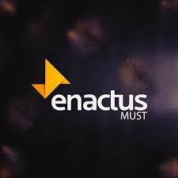

Position Overview
Organization: Enactus
Duration: February 2022 - October 2022 (9 months)
Role: Student Research Assistant at PM team
Location: Egypt · Remote
Responsibilities
-
Assisted the PM team in various research and development projects.
-
Contributed to the planning and execution of research activities.
- Conducted data analysis and compiled research findings.
-
Supported team members with administrative tasks and project
documentation.
Skills Developed
- Strong research and analytical skills.
- Experience in project management and team coordination.
- Proficiency in data analysis and report preparation.
-
Enhanced ability to work in a collaborative and remote environment.